Unofficial study solution; not an official GTU answer key. Answers have not been independently verified. English text reflows; source equations, diagrams and Gujarati retain their original appearance. Use Enlarge image to inspect them.
આ બિનસત્તાવાર અભ્યાસ ઉકેલ છે, સત્તાવાર GTU જવાબવહી નથી. PDF માંથી ગુજરાતી લખાણ સાચું નીકળતું નથી, તેથી દરેક જવાબ મૂળ ચિત્રરૂપે જાળવ્યો છે. વાંચવા માટે ચિત્ર મોટું કરો. મૂળ પ્રશ્ન અને પરીક્ષાના વિકલ્પોની સૂચનાઓ અનુસરો.
Coverage: all five questions and every printed OR alternative are solved: 28 parts. Choose English or Gujarati in the workshop; the authentic printed English question appears in both.
Printed instructions: attempt all questions; make suitable assumptions; figures on the right indicate full marks; simple and non-programmable scientific calculators are permitted; the English version is authentic.
Approach: diagrams are schematic; formulas state their definitions and assumptions. The ball- mill calculation uses the mill inside diameter and includes the ball diameter.
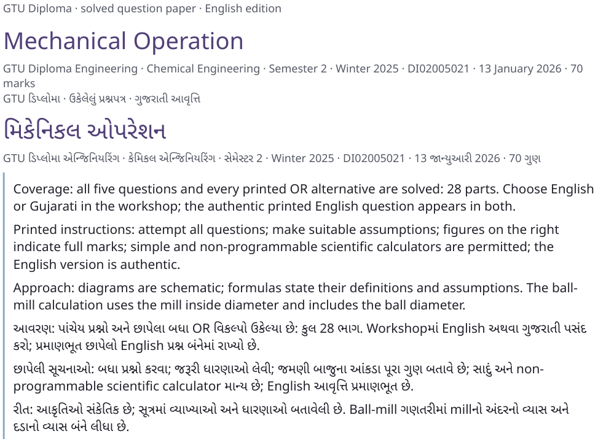
Question 1
Q1 · Unit operations, size reduction and impellers
Q.1 (a) · Give difference between Unit operation and Unit process. · 3 marks
Unit operation: a physical step in a process, normally without a chemical change in the substance. Examples: crushing limestone, filtration of a slurry, or distillation of a mixture.
Unit process: a manufacturing step involving a chemical reaction; chemical composition changes. Examples: oxidation, nitration and neutralisation.

The two can occur in the same plant: after a reaction (unit process), filtration (unit operation) can separate its solid product.
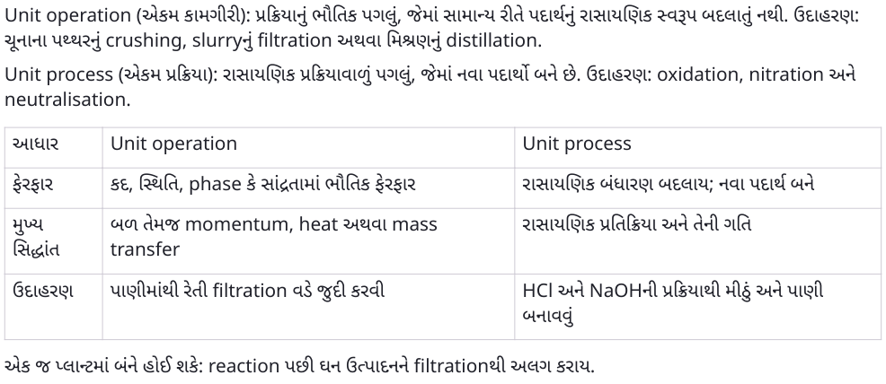
Q.1 (b) · Differentiate between Crushing and Grinding. · 4 marks
Crushing is the coarse breaking of large lumps; grinding is further reduction to finer particles.
![Q.1 (b): preserved source formula, table or diagram, page 2. Extracted text context (formula notation may be incomplete): Basis Crushing Grinding Stage and size Usually primary/intermediate; large lumps become smaller pieces Usually after crushing; smaller feed becomes powder Main action Compression, sometimes impact Impact and attrition, sometimes compression Machines Jaw, gyratory and roll crushers Ball mill, rod mill and attrition mill Product and energy Coarser product; generally less new surface per kg Finer product, more surface and generally more energy per kg](winter-2025.assets/0003.webp)
The size ranges overlap between machines; the required feed and product sizes decide the choice.
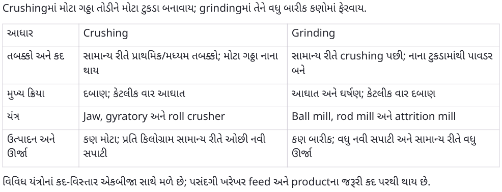
Q.1 (c) · Classify various size Reduction equipment in detail. · 7 marks
Size-reduction machines can be classified by stage/product size and by the predominant force. The boundaries are approximate, not fixed for every material.
![Q.1 (c): preserved source formula, table or diagram, page 3. Extracted text context (formula notation may be incomplete): Class and duty Equipment Main action / example Primary crushers: very large lumps to coarse pieces Jaw crusher, gyratory crusher Compression between jaws or crushing surfaces; ores and rock Secondary crushers: smaller, more uniform pieces Smooth/toothed roll crusher, cone crusher Compression or impact; coal, salts and friable rock Intermediate grinders Hammer mill, impact mill, rod mill Impact and/or rubbing; brittle materials, grains Fine grinders Ball mill, attrition mill Impact plus attrition; cement, pigments and minerals Ultrafine grinders Fluid-energy (jet) mill, colloid mill Particle collision or intense shear; fine powders or suspensions Cutting machines Knife/cutter mill, shredders Shear and cutting; fibrous or tough plastics and roots](winter-2025.assets/0005.webp)
Choice of force
Compression is useful for hard lumps, impact for brittle feed, attrition for fine grinding, and cutting for fibrous feed. A single machine can use more than one force; screens or classifiers can return oversize to a mill.
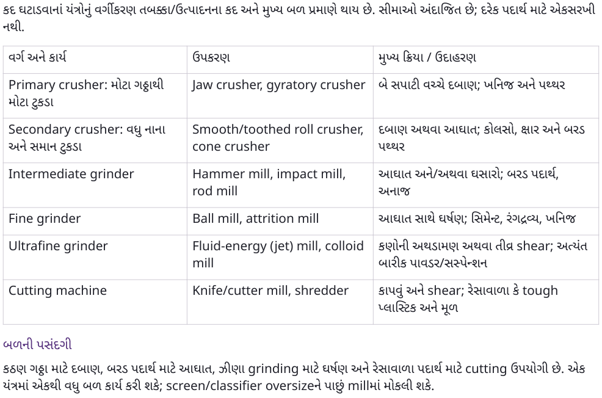
Q.1 (c) · Explain various types of impellers with sketch. · OR · 7 marks
An impeller is the rotating element on an agitator shaft that imparts motion to a liquid. Its shape determines flow and shear.
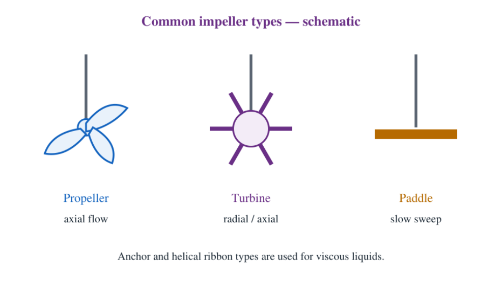
Propeller, turbine and paddle impellers; the sketches are schematic, not scale drawings.
![Q.1 (c) OR: preserved source formula, table or diagram, page 4. Extracted text context (formula notation may be incomplete): Type Construction and flow Typical use Propeller Usually three pitched blades, often high speed; chiefly axial flow Low-viscosity liquid, blending and suspension Turbine Several blades mounted on a hub or disc; straight blades give radial flow, pitched blades give axial flow Gas dispersion and liquids requiring stronger shear Paddle Two or more broad flat blades; usually slower and larger than a propeller Mild blending and moderately viscous liquids Anchor Large blade follows the wall and sweeps near it at low speed Viscous liquid and heat transfer at the wall Helical ribbon Spiral blade close to the vessel wall circulates very viscous material Pastes and high-viscosity, non-Newtonian materials](winter-2025.assets/0008.webp)
Choice depends on viscosity, required flow/shear and the mixing objective. Baffles can suppress vortex formation with a centrally mounted impeller.
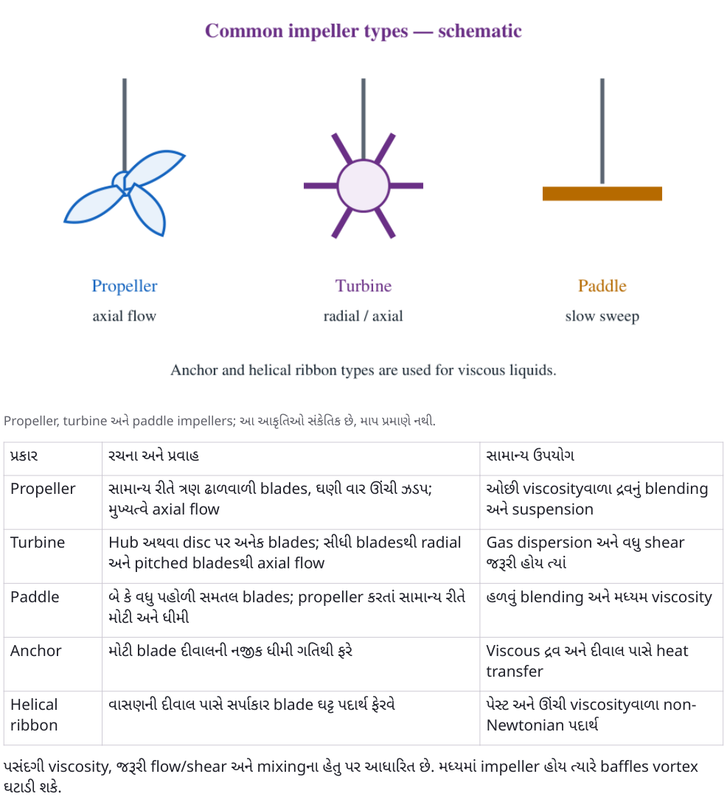
Question 2
Q2 · Particle sizes, screens and equipment
Q.2 (a) · Define Size reduction. List Principle of Size reduction. · 3 marks
Size reduction or comminution is the breaking of solid pieces into smaller pieces by applying mechanical forces.
Principle How it breaks the solid Example
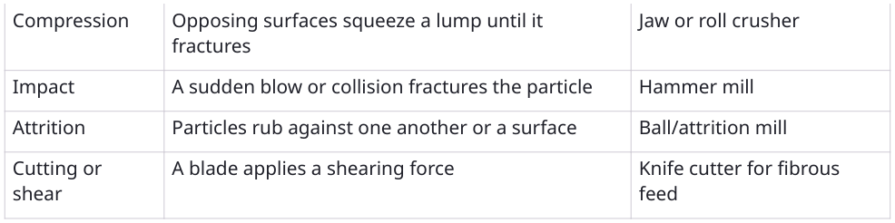
The operation produces smaller particles and increases their specific surface area.
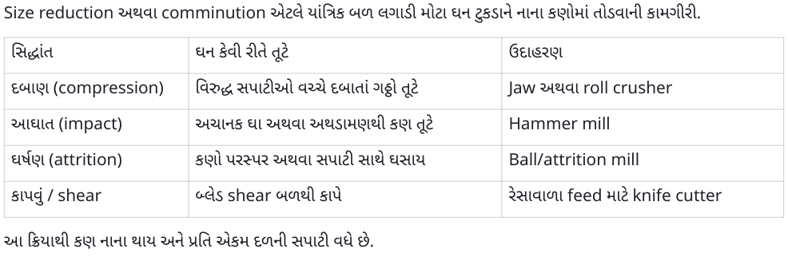
Q.2 (b) · Define: (i) Volume surface mean Diameter and (ii) Sphericity. · 4 marks
(i) Volume–surface mean diameter dvs, also called the Sauter mean, is the diameter of a sphere having the same volume-to-surface-area ratio as the particle population. For spherical particles of diameter dᵢ, with nᵢ particles of each size:
For equal-density particles, let xᵢ be the mass fraction of class i and dᵢ its surface–volume diameter, where Vᵢ and Sᵢ are the volume and surface area of a representative particle:
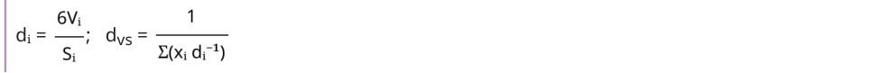
For spheres dᵢ is the ordinary diameter. For an irregular particle, dᵢ = ψᵢ dv,i, where ψᵢ is its sphericity and dv,i its volume-equivalent diameter; the shape factor must not be omitted.
(ii) Sphericity ψ is the surface area of a sphere of the same volume as the particle divided by the particle’s actual surface area:
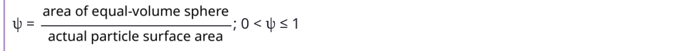
It is dimensionless; a sphere has ψ = 1, while irregular particles generally have ψ < 1.
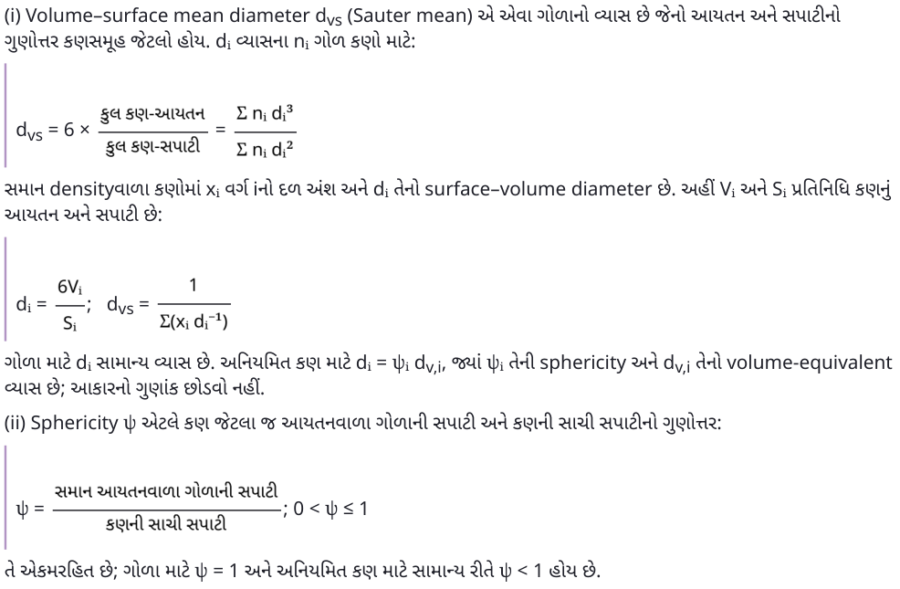
Q.2 (c) · Explain Construction, and Working and Application of Electrostatic precipitator. · 7 marks
Principle: dust particles are electrically charged in a high-voltage corona and migrate in an electric field to oppositely charged or earthed collecting surfaces.
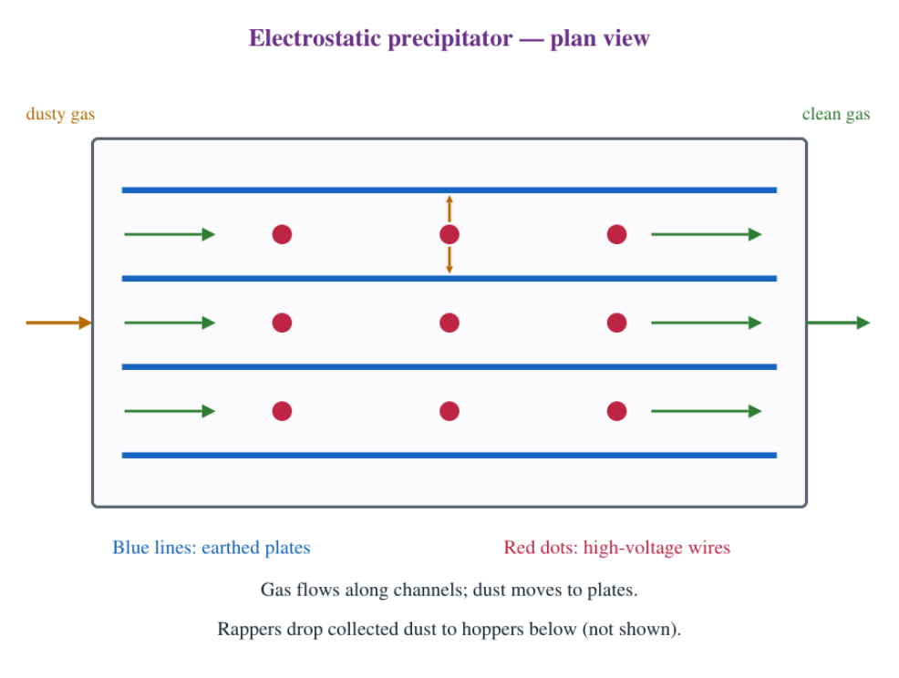
Plate-and-wire electrostatic precipitator; arrows show gas flow and dust collection.
Construction — part and purpose

Working — step and reason
1. Dusty gas enters and passes between the high-voltage wires and collecting plates.
2. Corona ions attach to particles, giving them an electrical charge.
3. The field drives the charged particles to the plates; cleaned gas exits.
4. Rapping dislodges the accumulated dust, which falls to the hopper for removal.
Applications: removal of fly ash from power-plant flue gas and dust from cement or metallurgical exhausts. Advantages: high collection efficiency and relatively low gas pressure drop. Limitations: high initial cost, electrical safety requirements and sensitivity to dust resistivity and operating conditions.
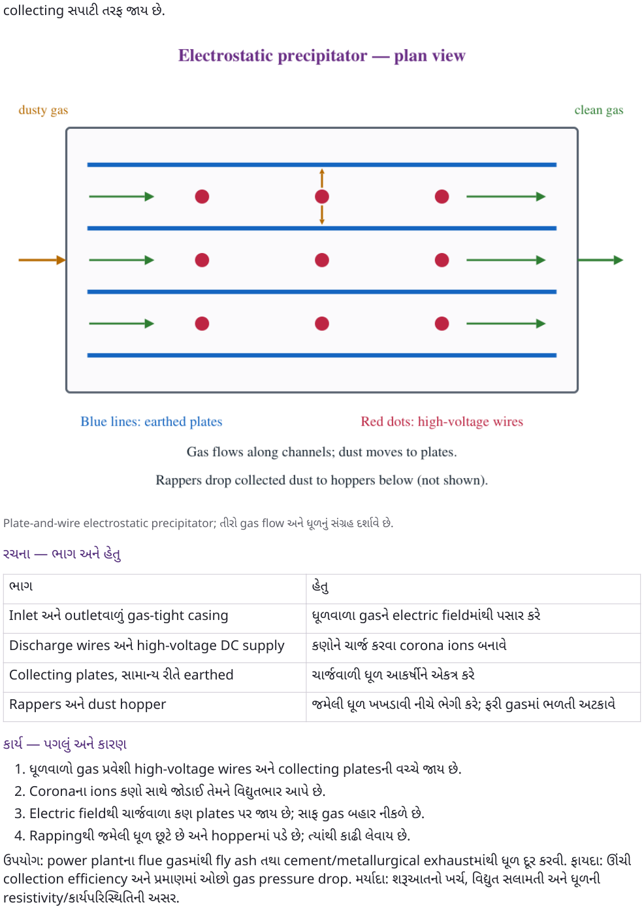
Q.2 (a) · Define Ideal Screen. List various types of industrial screen. · OR · 3 marks
An ideal screen makes a perfect separation at its specified opening: every particle smaller than the opening passes into the undersize, and every particle larger than it remains in the oversize. Neither product is contaminated by the other size.
Industrial screens: fixed grizzly/bar screen, revolving trommel, vibrating screen, gyratory screen, shaking screen and stationary inclined screen. Real screens have less than ideal separation because of blinding, overloading and near-size particles.
Q.2 (b) · Define: (i) Mass mean Diameter and (ii) Equivalent diameter. · OR · 4 marks
(i) Mass mean diameter is the arithmetic mean of the representative particle diameters weighted by their mass fractions:
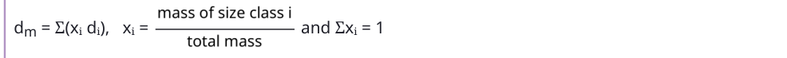
For example, equal masses of 1 mm and 3 mm particles have dm = 0.5(1) + 0.5(3) = 2 mm.
(ii) Equivalent diameter represents a non-spherical particle by a sphere sharing a specified property. For the common volume-equivalent diameter, the sphere has the same volume Vp as the particle:
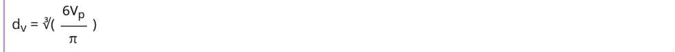
Other conventions, such as sieve-equivalent or settling-equivalent diameter, match a different property and can give different values. State the convention.
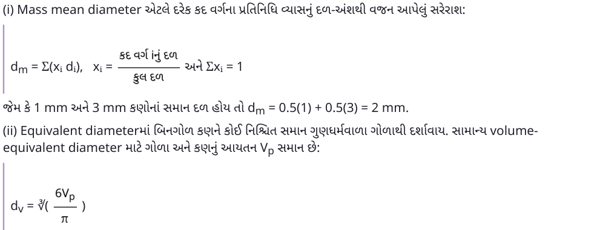
Q.2 (c) · Explain Principle, construction, working of Agitated vessel. · OR · 7 marks
Principle: a rotating impeller transfers mechanical energy to the liquid, generating circulation and shear; this distributes added material, heat or suspended solids through the vessel.
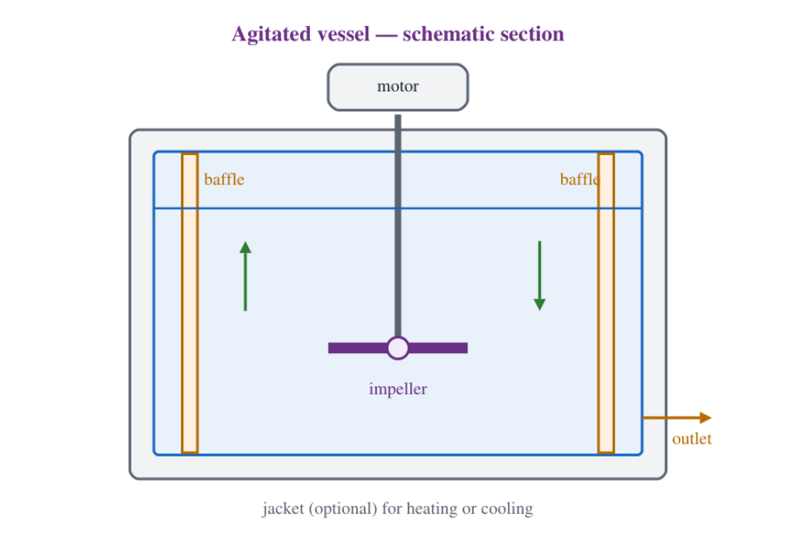
Agitated vessel section: motor, shaft, impeller, baffles, jacket and outlet.
Construction — part and purpose

Working — step and reason
1. Charge the vessel to the required level and start the motor.
2. The impeller pumps liquid axially or radially depending on its design, creating circulation loops.
3. Baffles interrupt bulk rotation so fluid from different regions is exchanged and additions disperse.
4. Continue for the required mixing time; heat or cool through a jacket if needed and withdraw the product.
Applications: dissolving chemicals, mixing miscible liquids, suspending solids, heat transfer and chemical-reactor agitation. Select impeller and speed for viscosity and duty; viscous pastes may need an anchor or helical ribbon.
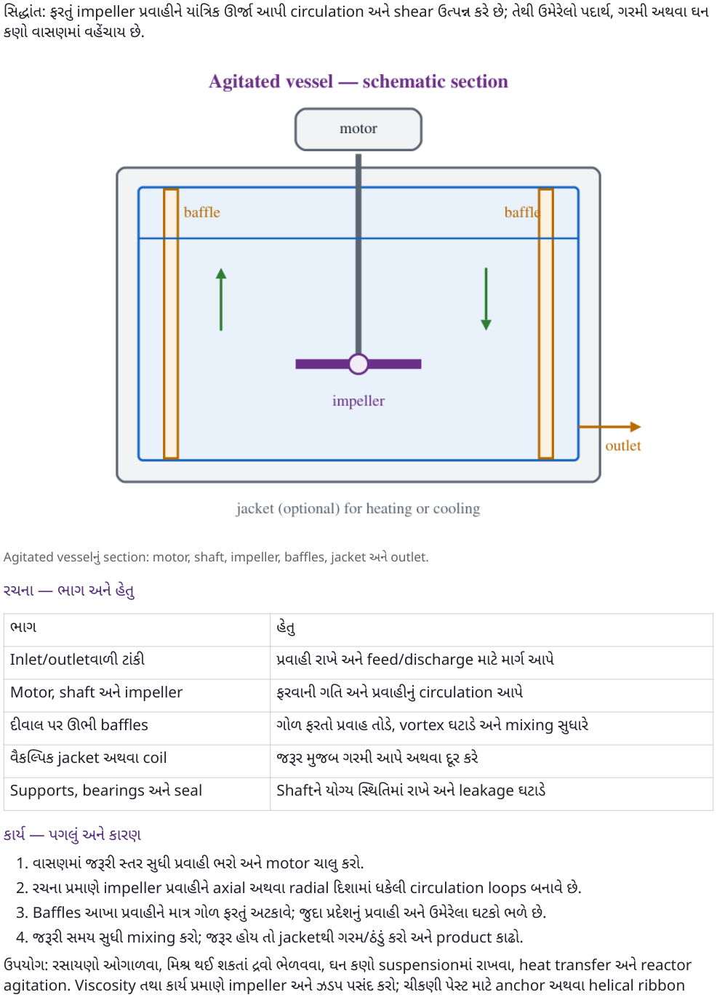
Question 3
Q3 · Filtration, crushers and grinding
Q.3 (a) · Differentiate between constant rate filtration and constant pressure filtration. · 3 marks
![Q.3 (a): preserved source formula, table or diagram, page 13. Extracted text context (formula notation may be incomplete): Basis Constant-rate filtration Constant-pressure filtration Controlled quantity Filtrate flow rate is held constant Pressure difference across the filter is held constant As cake builds Pressure must rise to overcome increasing resistance Filtrate rate falls as cake resistance increases Typical equipment Positive-displacement pump with controlled flow, within pressure limit Pressure receiver or regulated pressure supply Limitation Ends or changes mode at maximum permitted pressure Flow decreases with time in a batch filter](winter-2025.assets/0030.webp)
In both cases a filter medium retains solids; the accumulated cake adds resistance.
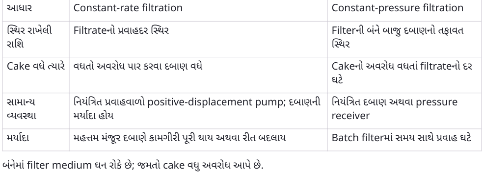
Q.3 (b) · Draw the neat sketch of Roll crusher and name its parts. · 4 marks
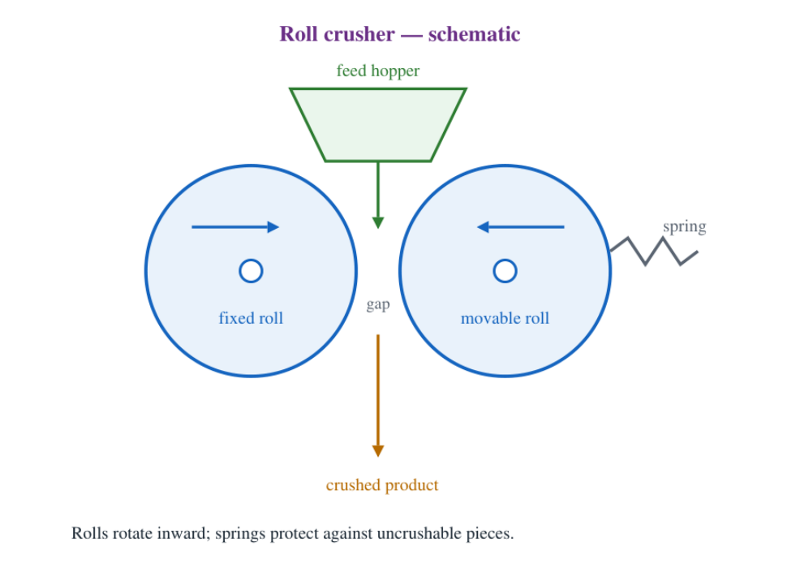
Roll crusher: two rolls, feed hopper, adjustable gap, spring and product outlet.
Parts and functions: feed hopper supplies lumps; two rolls rotate toward one another and compress them; the adjustable gap sets the discharge size. The movable roll and spring allow uncrushable material to pass. A motor and drive transmit motion to the rolls.
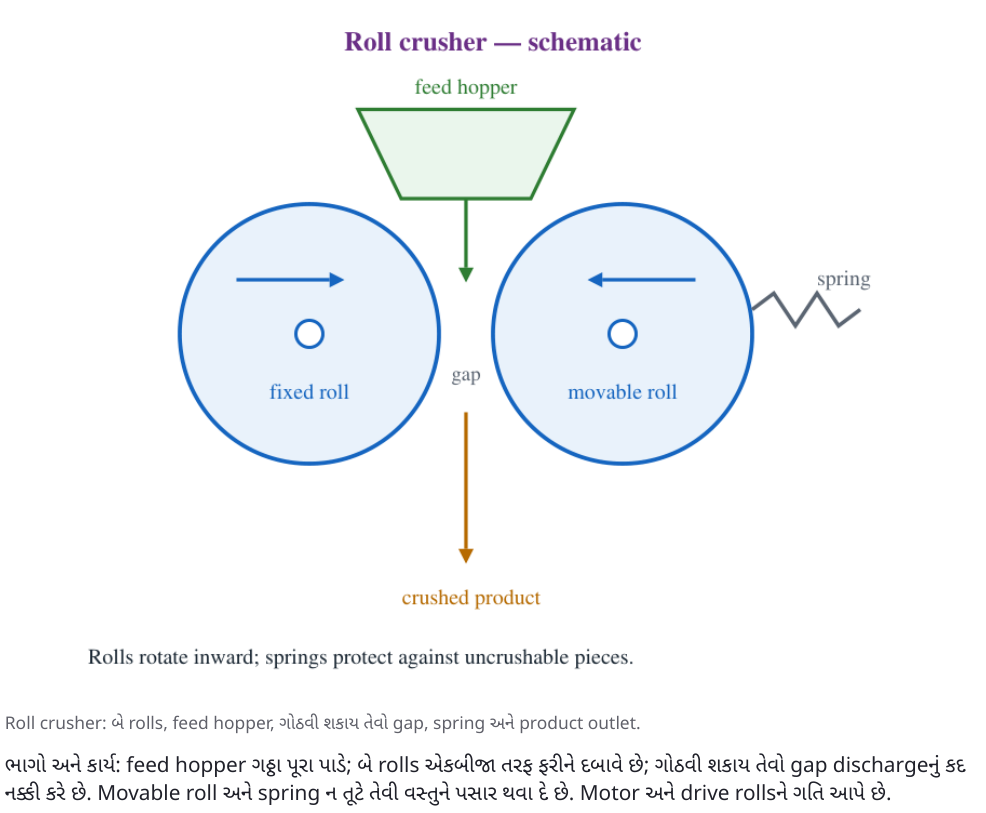
Q.3 (c) · Explain Principle, construction and working of plate and frame filter press with neat sketch. · 7 marks
Principle: pressure forces slurry through a porous filter cloth. The cloth retains solids as cake, while filtrate drains through plate channels.
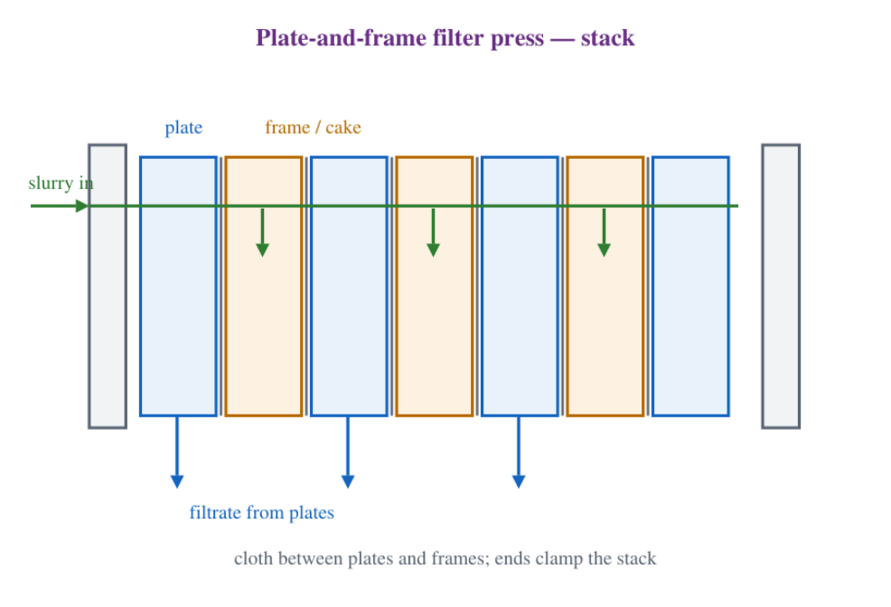
Alternating plates and frames in a filter press. Blue arrows show filtrate outlets; cloth lies between the faces.
Construction — part and purpose
![Q.3 (c): preserved source formula, table or diagram, page 16. Extracted text context (formula notation may be incomplete): Part Purpose Alternating plates and hollow frames Frames provide cake chambers; grooved plates support cloth and drain filtrate Filter cloth on each plate face Retains solid while allowing liquid to pass Feed channel and slurry pump Supply slurry under pressure to the frame chambers Head, follower and screw/ hydraulic clamp Hold the stack tightly to limit leakage Filtrate outlets and optional wash channel Collect filtrate; wash retained cake if required](winter-2025.assets/0035.webp)
Working — step and reason
1. Close the stack and pump slurry into the frames.
2. Pressure drives liquid through the cloth and plate grooves to the outlets; solids remain in the chambers as cake.
3. Continue until the chambers fill or the filtration rate becomes too low; optionally wash the cake.
4. Stop the pump, release pressure, open the press and remove cake; clean cloth and reassemble for the next batch.
Applications: clarification of liquids and recovery of solids in chemical, food and wastewater treatment. Advantage: large area and relatively dry cake; limitation: batch opening and cleaning require labour.
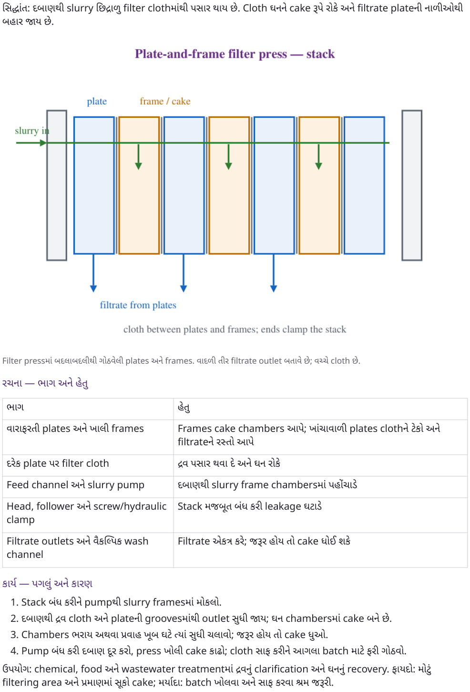
Q.3 (a) · Compare Closed Circuit Grinding with Open Circuit Grinding. · OR · 3 marks
![Q.3 (a) OR: preserved source formula, table or diagram, page 18. Extracted text context (formula notation may be incomplete): Basis Open-circuit grinding Closed-circuit grinding Flow Feed → mill → product, generally one pass Feed → mill → classifier; oversize returns to mill Size control Less precise; some coarse and excess fine particles may remain Classifier controls top size; fines leave as product Energy and equipment Simpler circuit and lower equipment cost; possible overgrinding More equipment and circulating load, but avoids prolonged grinding of finished fines Use Where a broad size range is acceptable Where a narrow product size and controlled fineness are needed](winter-2025.assets/0037.webp)
The classifier may be a screen or hydrocyclone, chosen for the material and operating conditions.
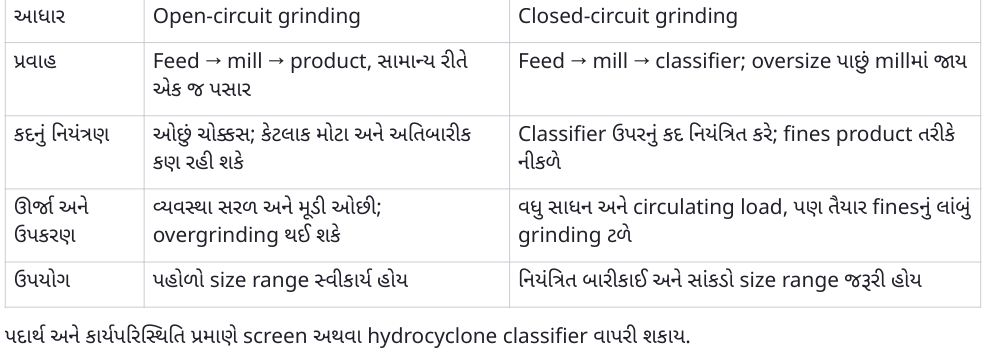
Q.3 (b) · Explain Screw Conveyor. · OR · 4 marks
Principle: rotating helical flights push a confined bulk solid along a stationary trough.
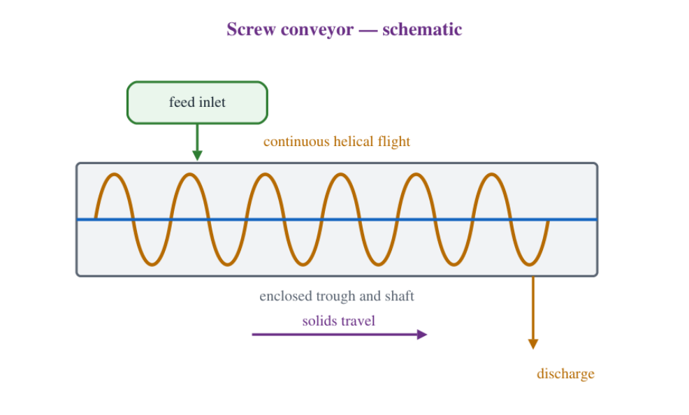
Screw conveyor: inlet, shaft and flights, trough and discharge.
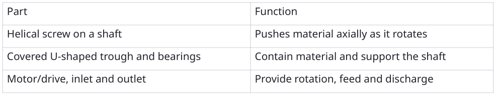
1. Feed material through the inlet.
2. The motor turns the screw; the trough restricts rotation of the solid, so the flights push it along.
3. The material drops through the outlet. Direction depends on flight hand and rotation.
Use: powders, grains and granular solids over short distances. It is compact and enclosed, but wear and power can be significant for abrasive solids.
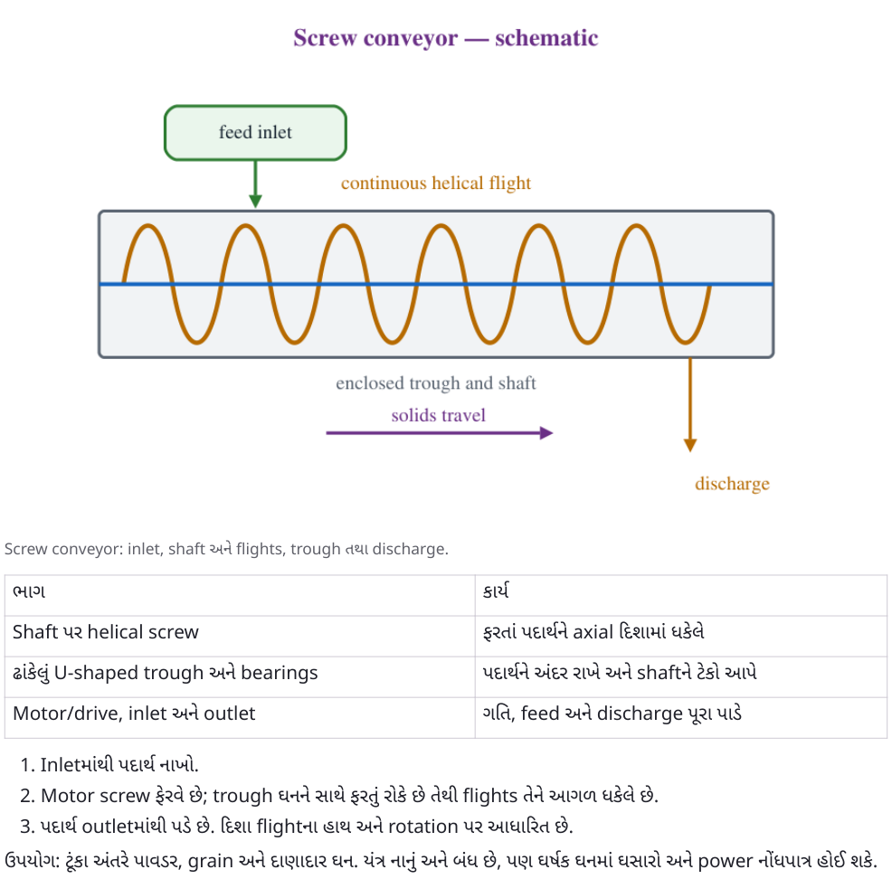
Q.3 (c) · Explain Principle, Construction, and Working of Hammer Mill with Neat sketch. · OR · 7 marks
Principle: high-speed swinging hammers break particles primarily by impact; impact against the casing and some attrition also contribute.

Hammer mill: feed, casing, hinged hammers, rotor, screen and product outlet.
Construction — part and purpose

Working — step and reason
1. Feed enters the chamber while the rotor turns.
2. Hammers strike the particles; repeated blows and collisions break brittle material.
3. Particles too large for the screen remain for further impacts; fine particles pass through the holes and discharge.
Applications: grinding coal, spices, grain and other dry brittle materials. Merit: compact and relatively high capacity; limitations: screen blinding with sticky feed and wear with abrasive feed.
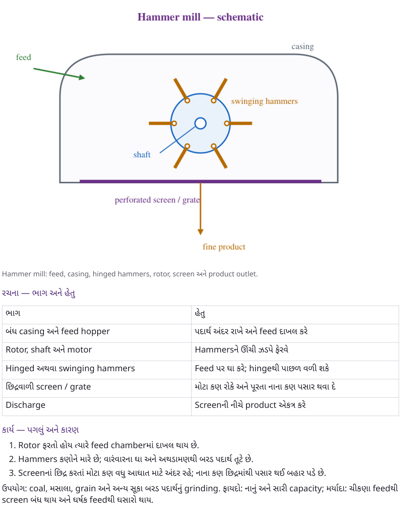
Question 4
Q4 · Vortex, energy laws and screen effectiveness
Q.4 (a) · List out the methods for vortex prevention in agitated vessel. · 3 marks
A vortex is the funnel-like depression at the liquid surface when liquid rotates with the impeller; it can entrain air and reduce effective mixing.
• Fit vertical baffles on the vessel wall to interrupt circular motion.
• Mount the shaft off-centre to break symmetric circulation.
• Use an inclined or side-entry impeller instead of a centrally vertical shaft.
• Adjust impeller speed and liquid depth where suitable; excessive speed can promote a vortex.
Baffles are the usual method in larger stirred vessels.
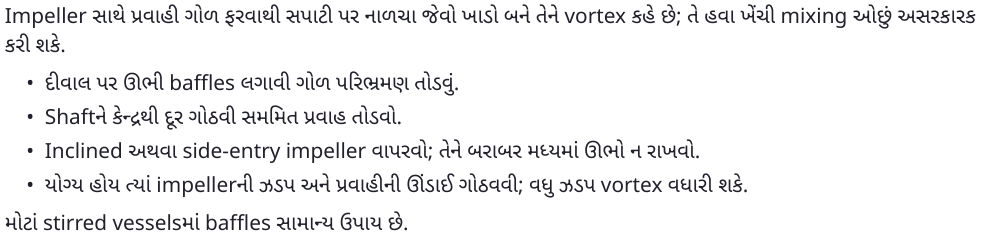
Q.4 (b) · State Bond’s law and Work index with Mathematical Formula. · 4 marks
Bond’s law: the energy required per unit mass is proportional to the change in the inverse square root of particle size; it is commonly applied to intermediate grinding.
F₈₀ and P₈₀ are the feed and product sizes, in micrometres, through which 80% by mass passes. E and the work index Wᵢ use the same energy-per-mass units, e.g. kWh tonne⁻¹.
Work index Wᵢ: the energy per unit mass required, under the standard Bond convention, to reduce a
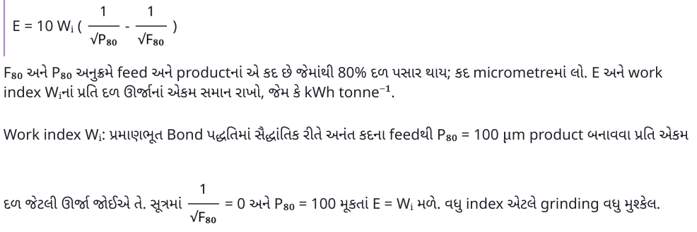
Q.4 (c) · Derive the expression for overall effectiveness of screen. · 7 marks
Let F, D and B be mass flow rates of feed, oversize discharge and undersize discharge. Let xꜰ, xᴅ and xʙ be the respective mass fractions of material larger than the screen opening.
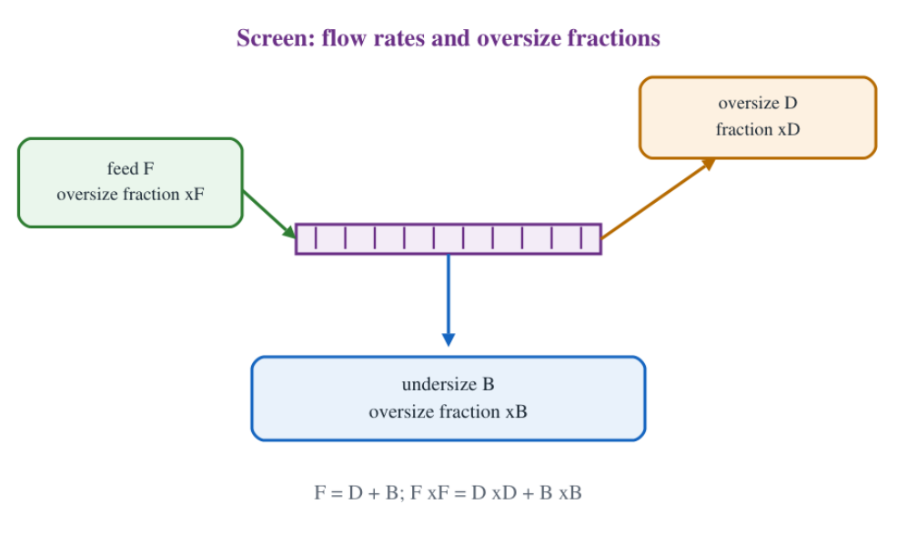
Feed F separates into oversize D and undersize B; x denotes oversize fraction in every stream.
1. Mass balances — Total: F = D + B. Oversize component: F xꜰ = D xᴅ + B xʙ.
5. Overall effectiveness — The standard product definition is E = EoEu. Substitute both stream ratios:
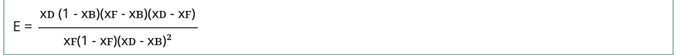
Multiply by 100 for percent. This expression assumes xᴅ ≠ xʙ and both size fractions exist in the feed (0 < xꜰ < 1). Perfect separation has xᴅ = 1, xʙ = 0 and E = 1.
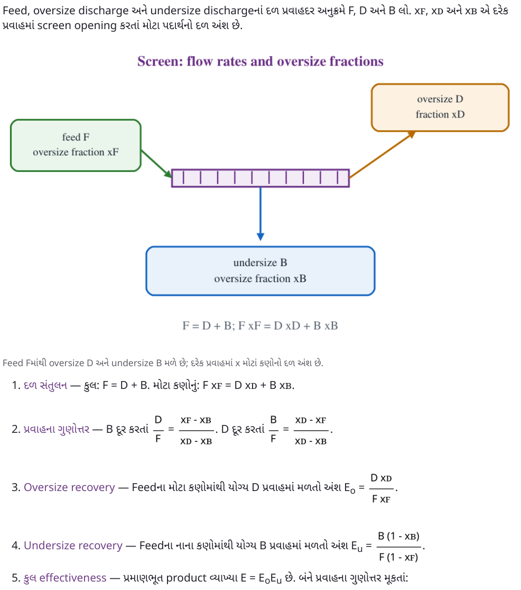
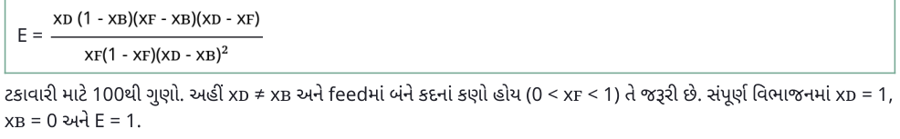
Q.4 (a) · List out various Solid- fluid Separation equipment. · OR · 3 marks
Examples of equipment for separating solids from a fluid:
• From liquids: settling tank / thickener, plate-and-frame filter press, rotary vacuum filter, centrifuge and hydrocyclone.
• From gases: cyclone, bag filter, electrostatic precipitator and wet scrubber.
The choice depends on particle size, fluid, concentration and the required recovery.
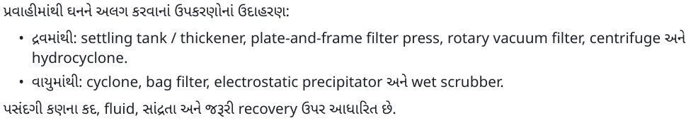
Q.4 (b) · State Rittinger’s law and Kicks law with Mathematical Formula. · OR · 4 marks
Rittinger’s law: energy per unit mass is proportional to the new surface area created. For
It is most useful for fine grinding, where surface creation is important.
Kick’s law: energy per unit mass depends on the size-reduction ratio, rather than absolute size:
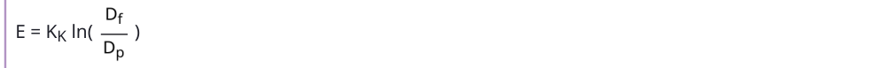
It is often used as an approximation for coarse crushing.
Df and Dp are representative feed and product sizes in consistent length units; KR and KK are empirical constants appropriate to those units.
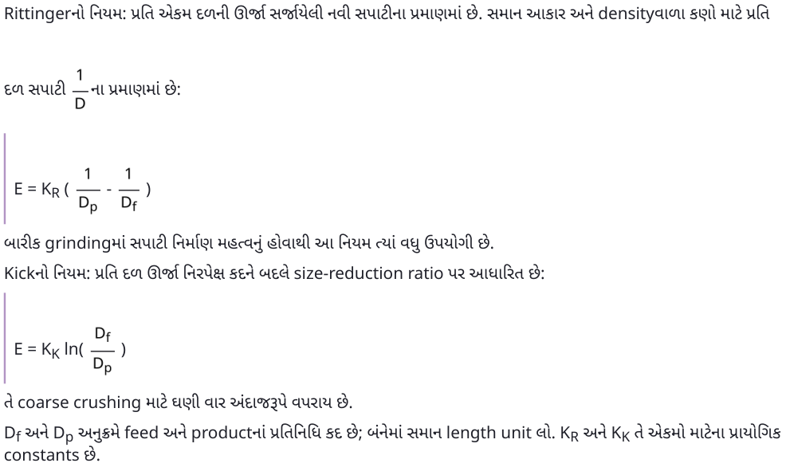
Q.4 (c) · Derive expression for Angle of Nip With a neat and labelled diagram · OR · 7 marks
Consider two equal rolls of radius R and diameter D, separated by a clear gap s. A spherical feed particle has radius r and diameter d. Let α be the angle between the horizontal centre line and the line joining a roll centre to the particle centre. The angle between the contact tangents is the nip angle θn = 2α.
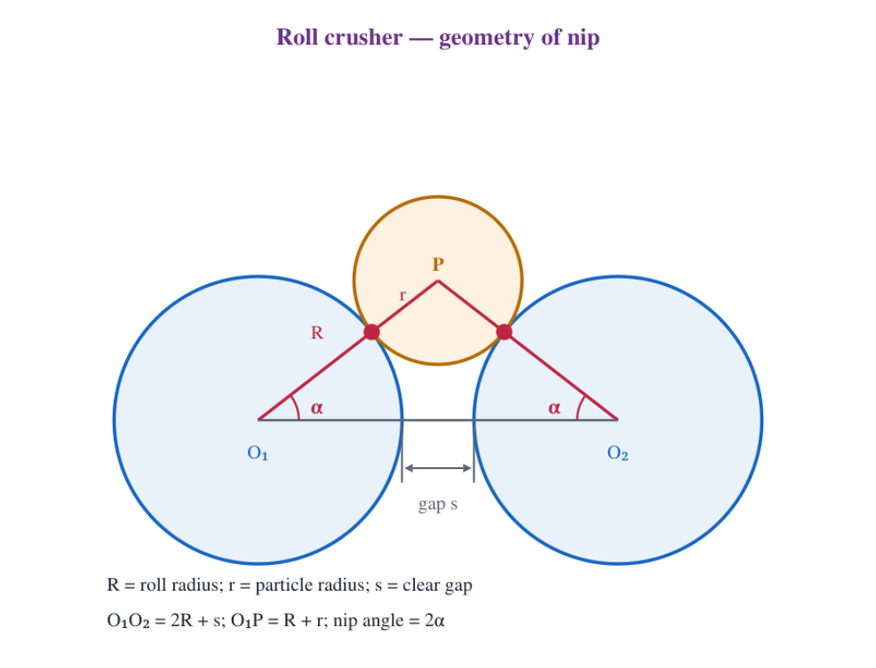
Centres, contact points, roll radius and gap. The drawing is schematic; the contact geometry determines α.
1. Geometry — At contact, centre-to-centre distance is R + r; its horizontal component is R plus
2. Forces — At each contact, normal force N has an upward component N sin α. Inward-rotating rolls exert downward friction F = μN with vertical component F cos α.
3. Condition to grip — Neglect particle weight in this limiting friction condition. For the downward friction to overcome the upward normal components, 2F cos α ≥ 2N sin α; hence μ ≥ tan α.
4. Maximum angle — At limiting grip, α = tan⁻¹ μ. The maximum angle of nip is therefore:
θn,max = 2 tan⁻¹ μ

The geometry equation is valid for a particle contacting both equal rolls (d ≥ s); it must also satisfy the friction condition for reliable nipping.
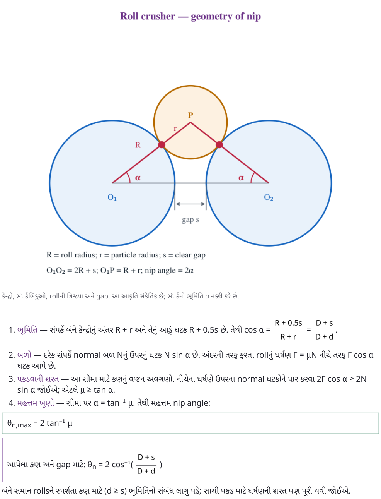
Question 5
Q5 · Mixing, filtration and ball-mill critical speed
Q.5 (a) · Define Agitation. List various type of Mixers. · 3 marks
Agitation is the induced motion of a fluid, normally in a vessel, using an impeller or other device; it creates circulation.
Types of mixers: propeller, paddle, turbine and anchor agitators for liquids; ribbon blender, double- cone blender and muller mixer for solids/pastes.
The desired mixing duty and viscosity determine the choice.
Q.5 (b) · Explain filter aids and its application. · 4 marks
A filter aid is a porous, inert solid added to a slurry or deposited as a precoat on the cloth. It forms an open, permeable cake that traps fine particles without rapidly blinding the medium.
Examples: diatomaceous earth (kieselguhr), perlite and cellulose fibres.
1. Precoat: deposit a thin layer on the medium before filtration; it protects the cloth and captures fine solids.
2. Body feed: mix a controlled amount into the slurry so the cake stays porous.
Applications: clarification of sugar syrup, edible oils, beverages, chemicals and other fine or gelatinous suspensions. Use a compatible aid; it mixes with the cake and may make recovery of pure solids difficult.
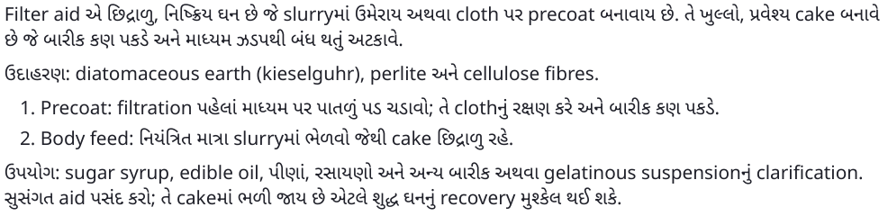
Q.5 (c) · Derive the Equation of Critical Speed of Ball Mill With a neat and labelled diagram. · 7 marks
The critical speed is the speed at which a grinding ball just remains against the mill wall at the top instead of falling. Above this ideal limiting speed the charge tends to centrifuge, greatly reducing impact grinding.
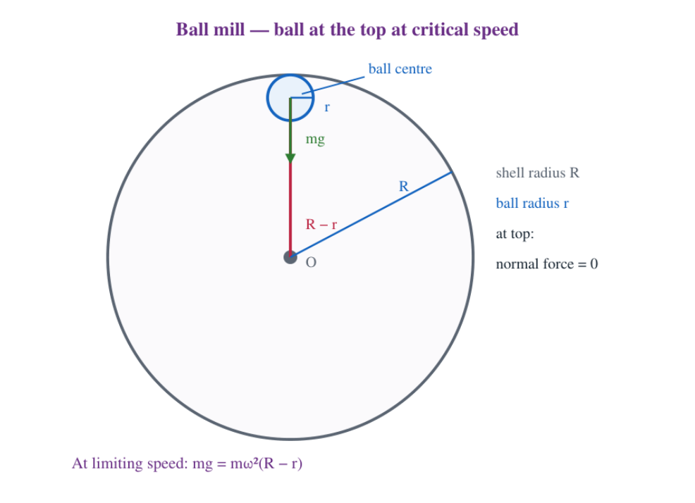
Ball at the top: its centre travels at radius R − r. At the limit the wall normal reaction is zero.
Symbols: mill inside radius R and diameter D; ball radius r and diameter d; g = gravitational acceleration; ω = angular speed in rad s⁻¹.
Assumptions: ball moves with the shell without slipping, air resistance neglected, and contact is just lost at the top.
1. Forces at the top — The necessary inward (centripetal) force is mω²(R − r). At limiting contact the normal reaction is zero; gravity mg alone supplies it.

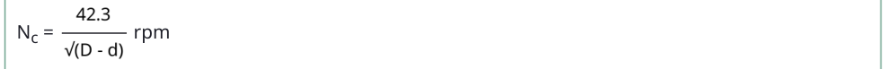
A practical mill is operated below the critical speed so the balls fall or cascade and create impact and attrition.
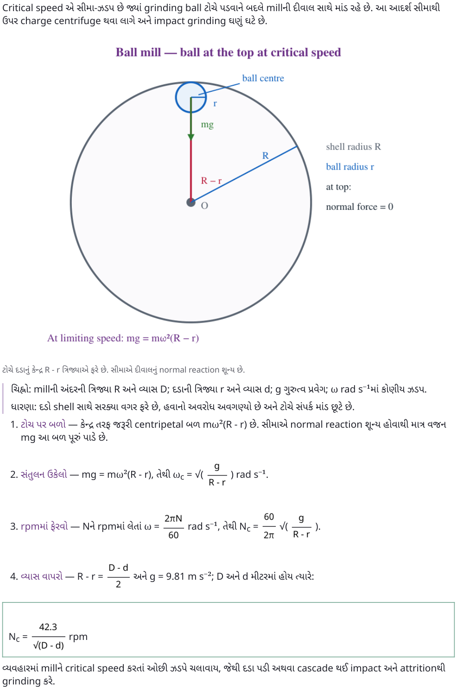
Q.5 (a) · Define Sedimentation and Filtration. · OR · 3 marks
Sedimentation: separation in which suspended particles settle relative to a fluid under gravity because of a density difference. Example: settling sludge in a thickener.
Filtration: separation in which a fluid passes through a porous medium that retains suspended solids, driven by a pressure difference. Example: a slurry passing through filter cloth in a filter press.
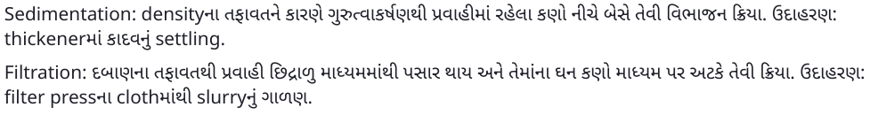
Q.5 (b) · Define: (i) Angle of Repose and (ii) Angle of Nip. · OR · 4 marks
Angle of repose θ is the maximum angle made by the free surface of a heap of loose solid with the horizontal, at which the material just remains stable without sliding. It indicates flowability; a steeper heap is generally less free-flowing.
Angle of nip θn in a roll crusher is the angle between the tangents to the two roll surfaces at the contacts with a particle just gripped by them. The largest usable nip angle depends on friction: θn ≤ 2 tan⁻¹ μ for the symmetric idealisation.
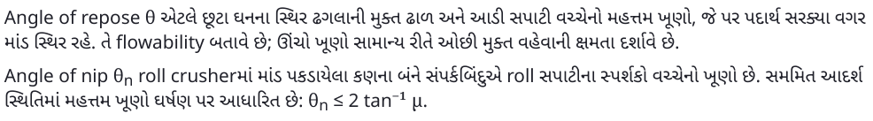
Q.5 (c) · Calculate the Operating speed and Critical speed of the ball mill from the following data: (i) Diameter of ball mill = 500 mm (ii) Diameter of ball = 40 mm (iii) Operating speed is 50% of the critical speed of the mill. (Take g = 9.81 m/s2 ) · OR · 7 marks
Given: mill diameter D = 500 mm = 0.500 m.
Ball diameter d = 40 mm = 0.040 m.
Operating speed N = 50% of Nc; g = 9.81 m s⁻².
Find: critical speed Nc and operating speed N, in rpm.
2. Diameter difference — D − d = 0.500 m − 0.040 m = 0.460 m.
4. Calculate angular speed — ωc ≈ 6.530863 rad s⁻¹.
6. Operating speed — N = 0.50 × 62.36515 rpm ≈ 31.1826 rpm.
Critical speed ≈ 62.4 rpm; operating speed ≈ 31.2 rpm.
The unrounded angular speed is carried through the calculation. It is in rad s⁻¹, not revolutions per second. The ideal formula assumes that the mill diameter is the inside diameter and the ball does not slip.
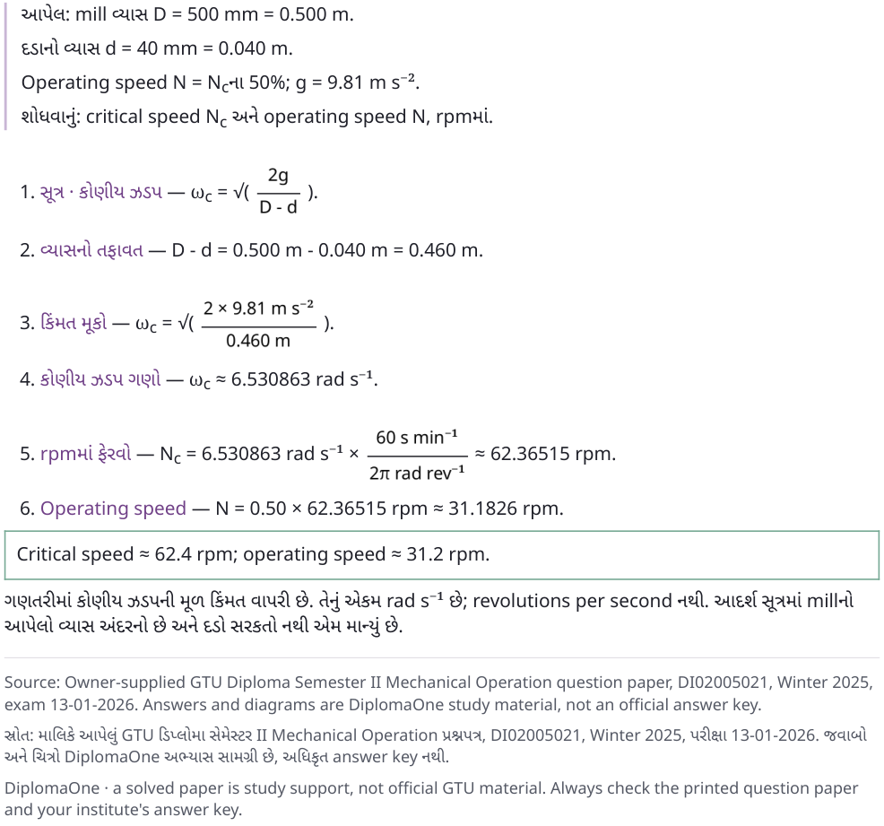